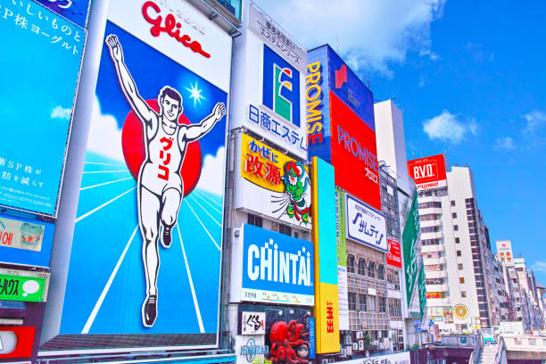
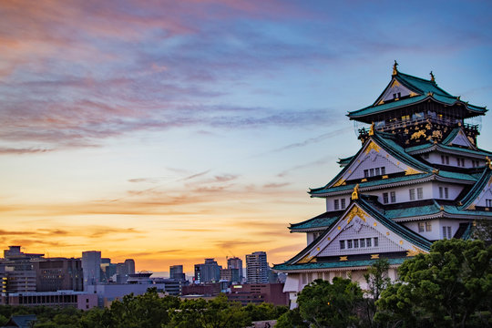

Osaka, known as "Japan's Kitchen," is famous for its delicious street food and vibrant nightlife. From the bustling streets of Dotonbori to the historic Osaka Castle, this city offers a unique blend of modern and traditional attractions.

Fig.1 - The vibrant Dotonbori area in Osaka.

Fig.2 - The historic Osaka Castle surrounded by cherry blossoms.